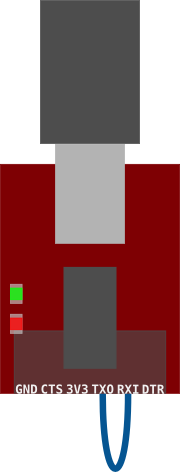

Loopbacks
我们已经测试了发送数据。是时候测试接收它了。除了没有其他设备可以向我们发送数据... 或者有吗？
输入: loopbacks

您可以向自己发送数据！在生产中不太有用，但对调试非常有用。
较旧的电路板版本 / 外部串行模块
如上所示，使用公跨接线将串行模块的TXO和RXI引脚连接在一起。
现在在minicom/PuTTY中输入一些文本并观察。发生了什么？
你应该看到三件事：
- 与之前一样，每次按键时，TX（红色）LED都会闪烁。
- 但现在，RX（绿色）LED也会在每次按键时闪烁！这表示串行模块正在接收一些数据；它刚刚发送的那个。
- 最后，在minicom/PuTTY控制台上，您应该看到您键入的内容会返回到控制台。
更新的电路板版本
如果您有较新版本的电路板，您可以通过使用母对母跳线短接PC4和PC5引脚来设置环回，就像您对SWO引脚所做的那样。
您现在应该可以向自己发送数据了。
现在尝试在minicom/PuTTY中输入一些文本并观察。
注意：为了排除现有固件对串行引脚（PC4和PC5）进行奇怪操作的可能性，我们建议您在 minicom/PuTTY 中输入文本时按住重置按钮。
如果一切正常，您应该会看到您输入的内容返回到minicom/PuTTY控制台。
现在您已经熟悉了使用minicom/PuTTY通过串行端口发送和接收数据，让我们让您的微控制器和您的计算机对话吧！